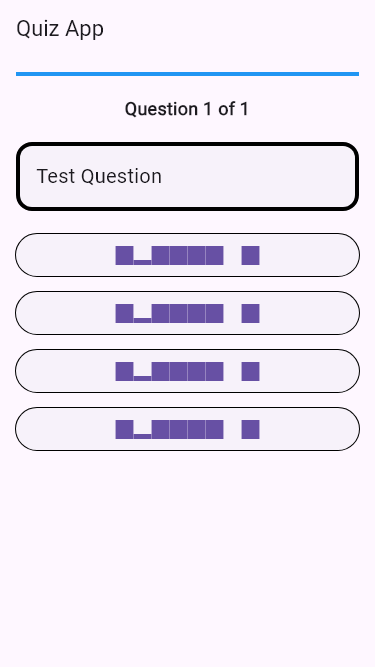
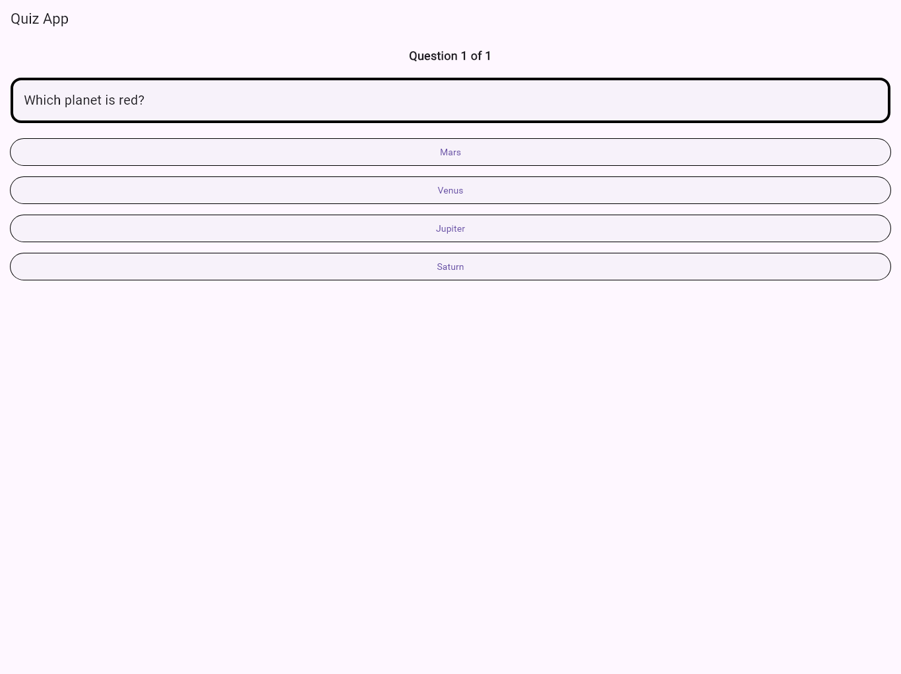
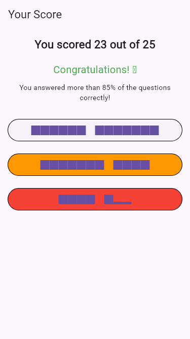
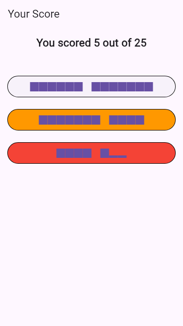
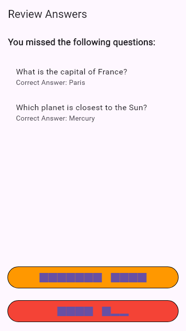

Version 1.0.1 - August 20, 2024
Initial release of the Quiz App. Features include multiple-choice questions, score tracking, and a user-friendly interface compatible with various devices.
When you open the app, you'll see a welcome screen. The app will present you with a series of questions, one at a time.
This image shows the initial screen of the Quiz App on a phone.
Read each question carefully and select your answer from the options provided. The app will automatically move to the next question after you make a selection.
This image shows a sample question on a tablet in landscape mode.
The Quiz App features various types of questions, including general knowledge, geography, and science topics. Some questions may be longer or more detailed than others.
Our app is designed to work seamlessly across different devices, including phones and tablets, in both portrait and landscape orientations. The user interface adjusts automatically to provide the best experience on your specific device.
After answering all questions, you'll be taken to a results screen where you can see your score.
This image shows an example of a score screen for a high score.
This image shows an example of a score screen for a lower score.
After completing the quiz, you can review the questions you missed. The app will show you a list of questions you answered incorrectly, along with the correct answers.
This image shows an example of the review screen, highlighting questions you missed and providing the correct answers.